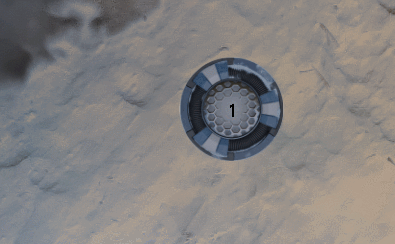

Genetic AI

Summary
| Date | 2017 - 2018 (eight months) |
| Tech | Custom engine : C++ / SFML / GLSL |
| Collaborators | Luc Chamerlat (Artist) |
Compete against different bots in this tech demo of a simple racing game.
- Artificial intelligence bots using steering behaviors and genetic algorihms
- Fully functional custom UI system
- Features VFX breakdown of particle systems and shaders
Download
The code can be found on my GitLab.
Project breakdown
Context
 Around march 2016, the Codingame platform launched a coding challenge : make an AI for a 2D racing game in one week. The AI controls two pods and must output simple commands each turn like acceleration and turn angle. I liked the game, so I tried my luck. My AI ranked 686th out of 2 530 contestants. I could only spend a weekend on the contest, so I felt I could've gotten a better score with more time. A couple years later I read a postmortem article written by one of the winners describing the genetic algorithm he used for his AI. I was fascinated with the idea, so I dug out my own code and got to work.
Around march 2016, the Codingame platform launched a coding challenge : make an AI for a 2D racing game in one week. The AI controls two pods and must output simple commands each turn like acceleration and turn angle. I liked the game, so I tried my luck. My AI ranked 686th out of 2 530 contestants. I could only spend a weekend on the contest, so I felt I could've gotten a better score with more time. A couple years later I read a postmortem article written by one of the winners describing the genetic algorithm he used for his AI. I was fascinated with the idea, so I dug out my own code and got to work.
Somewhere along the way I got bored of looking at my ugly programmer art, so I started experimenting with special effects. That's when my friend and colleague Luc Chamerlat, artiste extraordinaire, took a liking to the project and elevated it from "What's that green circle again ?" to "That's one cool looking ship !". You can find an article about his workflow on his Arstation blog.
AI type
Creating any sort of time constrained AI is always challenging. It always begins with a choice : wether to simulate the problem or not.
When simulating, you must accurately predict the result of an action in a specific state. In this project, that means building a physics engine. You must know what happens if two pods collide at a certain speed, with a certain angle and acceleration. The more accurate the simulation, the better your AI can use it to choose what to do.
This is obviously a time consuming choice : physics engine are hard to build and make a lot of computations at runtime.
finalTurnAngle = desiredTurnAngle * currentSpeed would make the ship turn faster at high speeds, hopefuly counteracting that.On the other hand without simualting one can only guess the result of an action. So we need some sort of intuition to determine our next move. For that we use heuristics, arbitrary rules that will hopefully guide the AI to a good result. To find heuristics we use good old empirical research : find a good strategy and translate it into simple rules.
Finding the right heuristics is key, and is different for each problem. My submission for the contest was heuristics based, but to make a genetic algorithm I needed the simulation. So I ended up making both.
The heuristics AI
Before working on the genetic algorithm I first improved my existing AI. I spent about a week refactoring the code and observing the best players. The most popular strategy on the server was to have one pod racing and the other hindering the opponent. But some AIs also dedicated everything to racing and got a high rank. From that I deduced that racing was more important than blocking, and focused on the racer. Here's a summary of the racer algorithm :
If I'm on a collision course:
// The shield makes the pod heavier in collisions, keeping it on trajectory
Activate shield
End If
If I will touch my checkpoint in less than 5 turns :
// Momentum usage : the momentum is big in this game, so let's use it to prepare a good trajectory
Turn towards the next checkpoint
If I will touch my checkpoint during the next turn :
// This helps the pod retain a bit of speed
Accelerate full power
End If
Else
Turn towards checkpoint
// Special case to avoid the pod stupidly circling a checkpoint endlessly. dangerZoneDistance is chosen abitrarily
If distance to checkpoint less than dangerZoneDistance
// Acceleration is reduced if the pod is not aiming directly at the checkpoint
// This will make the pod slow down to avoid missing the target
Interpolate acceleration
Else
If turn angle is less than 120°
Accelerate full power
Else
Do not accelerate
End If
End If
End If
But we can do better !
Examples
Let's look at a few examples of this AI in action ! We'll start slowly : time attack mode, no opponent blocker.
As you can see above, the AI handles long straight lines with sharp turns pretty well. The momentum usage works wonders here, but this is what it was designed for after all.
It also shines in zig zags, keeping the pod on a nice straight trajectory. It could maybe be a bit faster, but it's efficient enough.
Did you notice that the pod takes very tight bends on checkpoints ? That's due to another heuristic : when turning towards a checkpoint the pod actually aims for a point that is closer to the checkpoint's edge.
One obvious flaw is revealed when checkpoints are loosely aligned. The pod stops accelerating to aim at the next checkpoint when it could clearly keep going.
The racer looks fine in time attack. But what about an actual race ? Here is the AI racing itself. Notice how each team has a dedicated blocker and runner.

Well that was messy.
There is a lot to analyze here. The first apparent problem is that pods bump each other all the time. There are generally two kinds of races in this game.
If one team is clearly superior to the other, its an easy victory. Either the racer cruises to the finish line unhindered, or the blocker completely shuts down the opponent runner.
If the two teams are of similar level, it devolves into a bump fest.
Now let's zoom in. The first checkpoint goes badly for the red team. The two runners go for the momentum turn but bump each other midway, to the blue one's advantage. Notice the lack of collision avoidance : the two runners stupidly try to go through one another. And then comes our red blocker's first appearance, heroicly ramming the blue runner (and its own teammate) out of the way !
The runner and blocker have no cooperation which can be a problem sometimes. But they generally play in different areas of the track, so it is mostly fine.
Notice how the red team's AI then switches roles : the orange pod is better positionned to continue the race and becomes the runner while pink goes down to intercept the blue runner later.
 Let's focus on the blocker. The algorithm has two states : positionning and ramming. When positionning, the blocker tries to position itself between the opponent runner and its next checkpoint. Then it tries to ram the runner for maximum disruption. As you can see this works pretty well when the blocker has had the time to position itself optimally.
Let's focus on the blocker. The algorithm has two states : positionning and ramming. When positionning, the blocker tries to position itself between the opponent runner and its next checkpoint. Then it tries to ram the runner for maximum disruption. As you can see this works pretty well when the blocker has had the time to position itself optimally.
This again shows the runner's lack of collision avoidance. That is obviously a problem, but it's not as big as I thought. As stated above, this algorithm got rank 126 on the worldwide leaderboards. I think that's because it races just fast enough that the opponent blocker doesn't have enough time to position itself properly. It is definitely enough against my own blocker, who generally has five or less significant "blocks" per race.
Well, so far so good !
The genetic AI
Prerequesites
There are a lot of good resources on the net to learn about genetic algorithms. I will only present my approach to this, which is in no way exhaustive.
Let's go over the prerequisites of a genetic algorithm. First, you must represent your problem in terms of genes and genomes.
- A gene is simple object that describes an action. The structure of a gene depends on the actions that the AI can do.
- A genome is a succession of genes. Thus a genome can be seen as a series of actions. The number of genes per genome is specific to your problem.
- A state representation. Think of it as taking a picture of the game at a certain time : this picture depicts a state.
- A way to simulate a genome from a given state. This is like asking : "from that situation, what would happen if I did these actions?"
- A way to score a given state. This is like asking : "Is this situation good or bad for my AI ?"
Concept
A genetic algorithm works by mimicking natural evolution. The theory is simple :
- Create a starting population of genomes. They can be either random or made from a basic strategy.
- Somehow evolve those genomes by mutating or crossing them (more on that below)
- Score the genomes
- Create a new population from the existing one. There are several ways to do this : remove the weak, breed the strong, mutate randomly, etc.
- Repeat 2-3-4 until a solution is found or time runs out.
Faster, faster !
This might seem like a wasteful approach. It actually is and it's a problem : we don't have time to waste. In codingame the AI has 75ms to output its action. In this project it's even lower. So we need to nudge the algorithm towards a sensible solution. This is done when creating the starting population : the starting genomes are made from the heuristics AI. This ensures the algorithm will start from a decent solution and try to upgrade it.
Doing this removes some of the randomness. That means the algorithm might miss the optimal solution. But on this problem, I'll take a good solution everytime over the best optimal solution sometimes.
Of course, this wouldn't be enough if the code wasn't heavily optimized. I spent a good month optimizing the physics engine so it could run hundreds of thousands of turn simulation per second. Otherwise, the genetic algorithm wouldn't reach a good solution in time.
Problem representation
I chose to have my genes as three floating point numbers : one for turn, one for acceleration, one for the shield. The genomes contain moves for both the runner and blocker pod at the same time. This allows cooperation between the pods.
The starting population is made of 3 genomes : one is the best from the previous turn (random for first turn), the other two are made by copying the heuristics AI. The evolution is quite simple : randomly mutate the first two genomes. Every ten mutations, I cross two random genomes together. The last genome is never modified ; it's the safety. If the evolution completely fails for some reason the last genome is guaranteed to have the same performance as the heuristics AI.
A problem state is simply the data for all the pods : position, speed, rotation, next checkpoint. The interesting part is the scoring function. I tested different ones but settled for the simplest :
score = (nb of checkpoints my runner passed - nb of checkpoints the opponent runner passed) * 100 000
- distance between my runner and its next checkpoint * 2
- distance between my hunter and the opponent runner
Examples
Let's see the results. Here is the genetic AI (turquoise) taking on the heuristics AI (blue) in time attack.

Looking good ! The first obvious difference is the "jittery" trajectory. This is a side effect of the genetic evolution : by mutating the genomes over and over we introduce some "noise" in the trajectory. But as you can see this doesn't prevent the genetic AI overtaking its counterpart.
An interesting addition is the use of the shield. In time attack mode, where collisions are disabled ? This is the first exemple of emergent behavior. the heuristics AI never used the shield in time attack which means that somehow the genetic algorithm decided that was a better solution.
This is due to a gameplay mechanic that wasn't discussed until now. Using the shield makes a pod heavier for one in game second, but it also prevents it from accelerating for three seconds. So using the shield is the same as not accelerating for three seconds. The algorithm used that loose speed for the incoming turn.
Again : this behavior was not implemented anywhere. The algorithm discovered it by itself as a valid strategy.
But then, zig zags happen.
This is another side effect of the genetic algorithm. In that track, a slower pace leads to a better trajectory and an overall better time. But the algorithm doesn't actually care about the future of the race. It only simulates a short number of turns, and so only cares about the very near future.
The obvious solution would be to up the number of turns the algorithm simulates. But then simulating a genome would take longer, leaving less time for evolution. That's when we should go back to empirical research and try to strike a balance between short term performance and long term strategy.
The problem with loosely aligned checkpoint is now gone. The algorithm specifically excels on big curvy trajectories, vastly outperforming the heuristics AI. This race actually was won by the genetic AI with a full lap lead, which is common on this track.
 Let's look at races. The Genetic AI is team red here. The first major difference with the heuristics AI is the use of collisions. Using the physics engine the algorithm can use bounces in its trajectory, and the runner will happily use that to go faster.
Let's look at races. The Genetic AI is team red here. The first major difference with the heuristics AI is the use of collisions. Using the physics engine the algorithm can use bounces in its trajectory, and the runner will happily use that to go faster.
This also marks the birth of the first "crowd favorite" moment : the backwards checkpoint. This perfectly demonstrates the algorithm's precision.
Did you notice the cooperation between pods ? The runner and hunter actions being contained inside the same genome pays off here. If you remember the scoring equation from above, the biggest factor is how the runners ranks in the race. This leads to the hunter positionning itself and shielding so that the runner can bounce away from a hard turn.
 The hunter is also leagues ahead of his heuristic counterpart now, holding the opponent runner away from checkpoints for extended periods of time. It still isn't very good at positionning, but when it does find a good spot it uses it much more effecitvely. And that is where the second crowd favorite comes in : the tag team checkpoint. Notice how the hunter intentionnaly clears space for the incoming runner only to reoccupy that space when its gone ?
The hunter is also leagues ahead of his heuristic counterpart now, holding the opponent runner away from checkpoints for extended periods of time. It still isn't very good at positionning, but when it does find a good spot it uses it much more effecitvely. And that is where the second crowd favorite comes in : the tag team checkpoint. Notice how the hunter intentionnaly clears space for the incoming runner only to reoccupy that space when its gone ?
To be fair, the genetic algoritm has a huge advantage in this matchup : it knows exactly what the heuristics AI will do since that is how it was implemented. This would not be as efficient against other AIs, especially those using a different strategy than mine. However even if they don't work out so perfectly, those strategies could still be effective since the algorithm can correct them every frame.
The physics engine is also a big requirement : the problem is simple enough that the engine is both fast and perfectly accurate. This would not be possible on more difficult problems, for example if the game physics included realistic drag or car physics.
Conclusion
The genetic algorithm is a major improvement over a heuristics based AI for specific cases. The emergence of cooperative behavior or the use of collisions can give pods a crucial advantage during a race. It is however difficult to implement and optimize to a usable point. Plus the behavior is dependent on a lot of factors that require lengthy experimentation, and it takes longer to compute than a heuristics algorithm.
Even if the genetic AI is stronger overall, I could never have implemented it in time for the original contest. I remain convinced that carefuly chosen heuristics are a better choice for this kind of game project overall.
Emergence Appreciation Corner
Let's just take a moment to appreciate emergence and why its awesome. Again, team red is the genetic AI, team blue is the heuristics AI.
 Look at the pink runner's trajectory. It gets bumped eight times during this gif. If you need any more proof that this is intended : look at its orientation. While being bounced around like a pinball it's already turning, preparing for the next checkpoint.
Look at the pink runner's trajectory. It gets bumped eight times during this gif. If you need any more proof that this is intended : look at its orientation. While being bounced around like a pinball it's already turning, preparing for the next checkpoint.
Also pay attention to the orange blocker. It bumps the pink runner in the correct trajectory, effectively setting up the whole play. Once again, this is due to cooperation between the pods.
 And wer're only just getting started on cooperation. This time the runner is in orange, almost a full lap ahead at this point of the race. Look at it overtaking the opponent runner in style. First it bounces off the turquoise runner, bumping it in a bad trajectory. It then bounces off the opponent hunter, landing in the perfect spot to once again bother the other runner before going on its merry way.
And wer're only just getting started on cooperation. This time the runner is in orange, almost a full lap ahead at this point of the race. Look at it overtaking the opponent runner in style. First it bounces off the turquoise runner, bumping it in a bad trajectory. It then bounces off the opponent hunter, landing in the perfect spot to once again bother the other runner before going on its merry way.
Again, notice the genetic hunter's precision (in pink here). It pushes the opponent hunter in a spot usefull to its ally pod, then chain bumps the oponnent runner into missing its next checkpoint.
Bounces. Gotta love them.